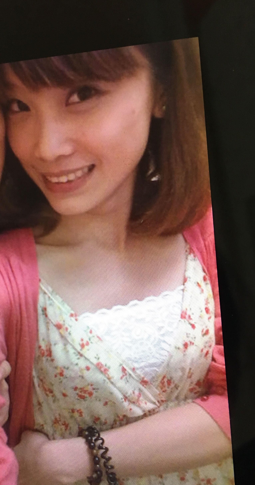
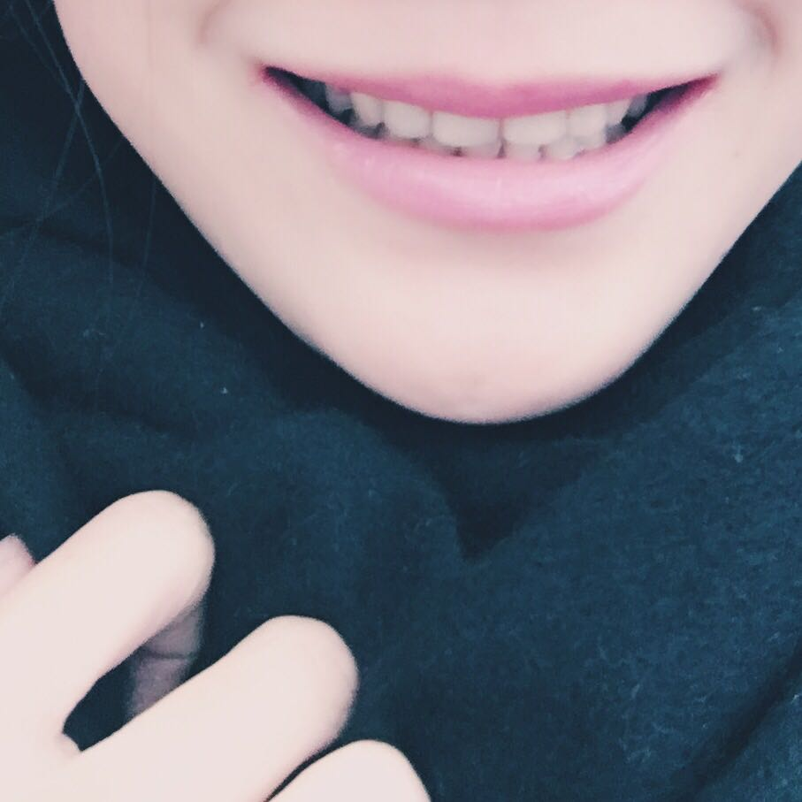
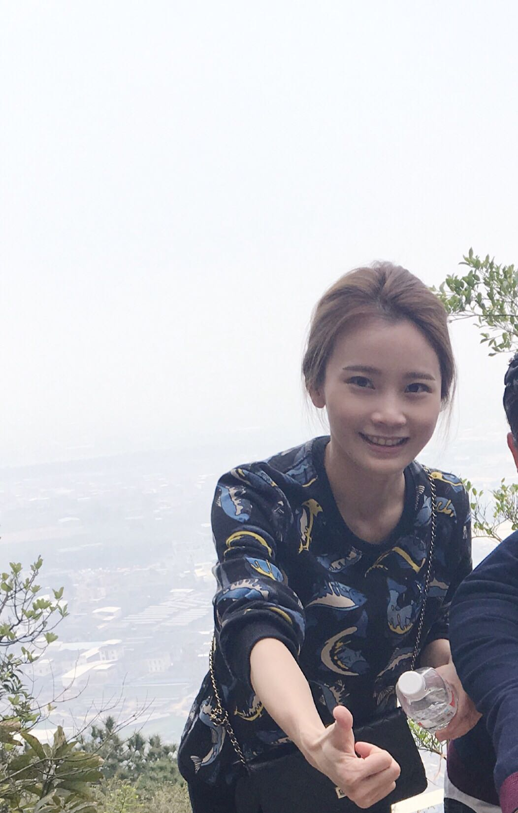

正文: 被很多人问过矫正的各种问题 今天终于可以做一回传道授业小公举了！24岁开始 在矫正牙齿这条路上浩浩荡荡走了两年十个月 今天拆了牙套 明天戴保持器 听说保持器又是一种全新的体验 待我去切身感受一下hhh
先上个图 请收好笑声么么哒
四年前的我长这样
这样
还有这样

矫正完的我
牙齿近照
（忽略一下我与几年前相比略有见长的p图和化妆技术 但嘴型和脸型我是没有动的 麻烦看嘴看脸型 看嘴看脸型 看嘴看脸型！）
很多人回复我说我原来牙齿看起来没什么问题 本来就很整齐呀blabla.. 我没矫正前上排牙齿的确是整齐的，但是有龅牙呀上颌都是突出的呀 穿着学士服那张我觉得挺明显的。 你们又不信了于是我今天决定厚颜无耻再贴一张现在的照片供对比哈哈
我自己觉得矫正完脸型好看很多 你们要是还看不出区别 我可能要去哭晕在厕所了嘤嘤嘤
在矫正以前拍照我都是尽量不露齿的 平常笑也习惯捂住嘴 因为口型宽 上排龅牙 下颌骨宽导致脸大 医生说这脸型如果是男的就不太需要矫正了然而我是女生（ 一把泪啊）
基本解决了无法尽情开口笑的问题 至少今晚我越看自己越顺眼了哈哈哈 一个女生 笑起来好看我觉得无论如何会让你变得自信真！的！不！骗！你！
所以 如果确实有问题就尽！早！做！小朋友更要尽！早！做！ 小朋友做矫正时间短效果也更好 像我这样的大龄女青年 问题大点儿一般就要两年打底了
不要听太多“你本来就很美”“你的牙齿明明没有问题”这种话 美不美是自己的事嘛 听听医生的建议也无妨 看你的牙齿有什么问题 到底适不适合做矫正 适合哪一种（啊我觉得隐适美很酷还美啊但就是贵）我做的是托槽带环 并且不是透明陶瓷的 嗯就是所谓的“钢牙” 现在想想当时就应该多花几百块钱戴陶瓷 省得受身边一堆损友日日嘲笑 （╯' - ')╯︵ ┻━┻
嗯对了戴牙套需要强大的心理跟意志力 医生经常跟我说这是变美丽的过程你要觉得开心所以要好好配合 现在想想还真是一种痛并快乐着的体验。说到体验 作为一名人民教师 最好笑的大概在于小盆友经常围上来指着你的牙问你 老师你为什么戴假牙老师你牙齿坏了吗 老师只能呵呵哒！
说说时间问题 在我认识的“病友”里面 大家大概耗时一到三年不等 我觉得我用时最长了 看着身边的小伙伴一个个完成矫正大业我每次复诊都心急如焚 然而医生慢条斯理是不会管我急不急急得想不想死的（微笑脸）
小朋友时间一般短 成年人时间长 就地治疗 定期复诊 要出国或者外地读大学的就在外地做 不然一个月打两三次飞的回来复诊你爸会哭晕在厕所的呢！
其次 很多人对拔牙十分恐惧 但拔牙这件事因人而异 咨询完医生并且你自己能接受了再去拔 也有不需要拔牙也能做的 我当时顶着被老人家骂到死的压力拔了四颗牙 而且是四颗好牙 对于我这种从小没拔过牙看到牙科器械会抖的人来说简直就是把命交给牙医了 但反正是受一颗赤诚的爱美之心驱使 就..its nothing啊 哈哈
要忍受的事情其实挺多 毕竟在天天要用到的嘴巴里装了个大怪物 比如 吃东西容易塞牙 刷牙要慢慢刷 一天刷好多次 吃完饭刷 吃完东西刷（其实我到后期已经偷懒成一天两次 不要学我啊乖 ）
比如 不能咬苹果梨李子和与其类似的大块食物 还有螃蟹鸡爪排骨等等 如果你实在贪吃
后果就是你的托槽会掉掉掉 去医院粘粘粘 耗时耗钱耗精力以外医生免不了给你一堆白眼 以上这些食物都是害我频繁掉托槽的祸首 这是我作为一个无法克制食欲的吃货的血泪经验
比如拉橡皮圈的时候 时间久了橡皮圈会黄 别人看到你咧嘴笑会以为你牙齿里卡了菜 因为这件事我已经被小伙伴笑了无数次了呵呵呵（再次微笑脸）
哦还比如 复诊加力的时候会痛 在刚开始一年多里我每次加力完都得喝几天稀饭因为牙齿是软的真的是软的 刚粘上托槽的时候疼到吃止痛片也是有的 但我的小伙伴也有不怎么痛的 所以可能每个人的受痛能力不一样 这..再因人而异一下
插一句 复诊的时候如果遇到男实习医生简直就要哭了 即使实习医生都是温柔的 但张着嘴形象全无还要听他跟你说你口腔卫生不干净噢要好好刷牙.... 反正我这辈子我下辈子下下辈子是打死不会嫁牙医了............
在医生那里三年 还耳濡目染来一些给小盆友的建议就是 要从小认真刷牙 保持良好的口腔卫生 不要咬嘴唇（我就是有吸嘴唇的习惯经常被医生批评）长牙的时候不要吃太软的东西等等
最后 最重要的 牙齿矫正是项大工程 一旦开始了就一定坚持！ 要有耐心不要半途而废 信任你的医生 配合医生遵医嘱（毕竟你的牙在人家手里） 然后 你一定会变美的：）